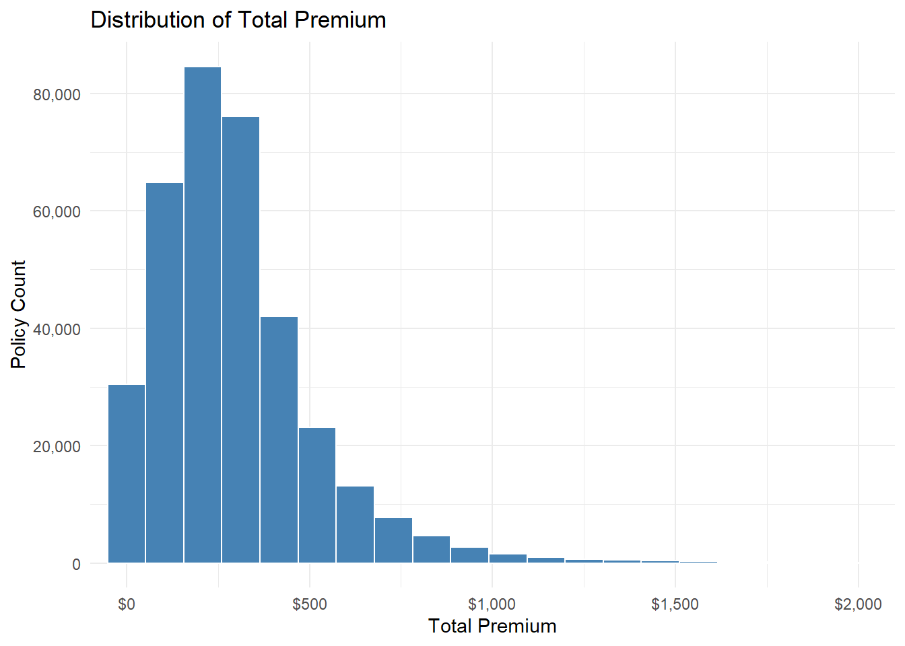
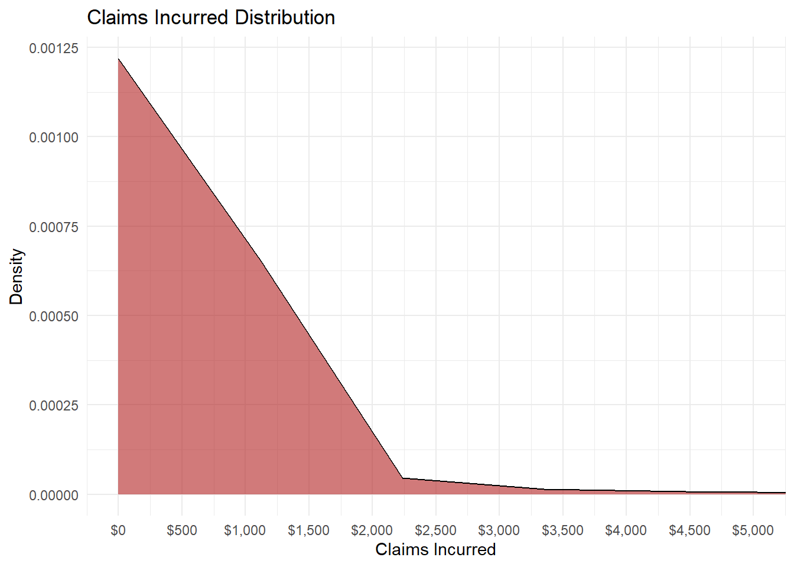
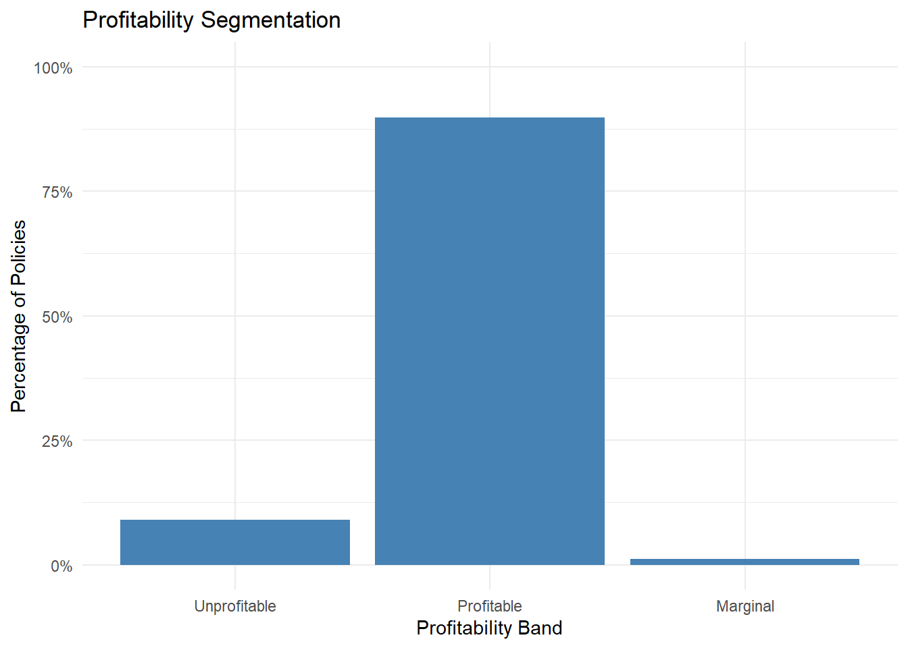
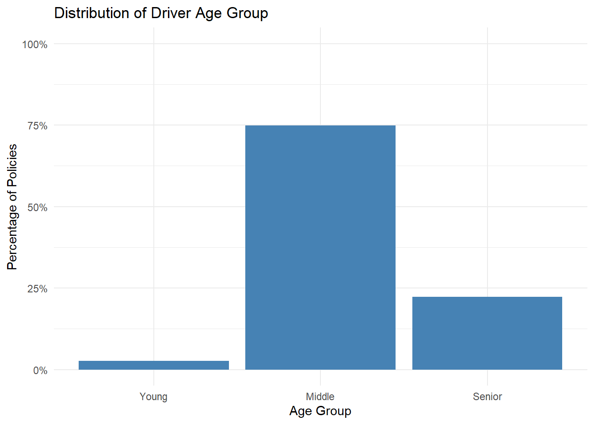
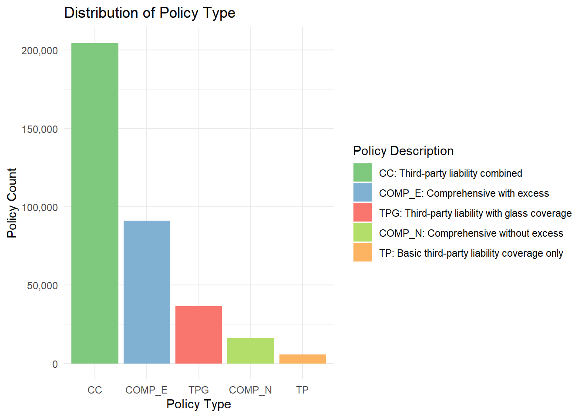
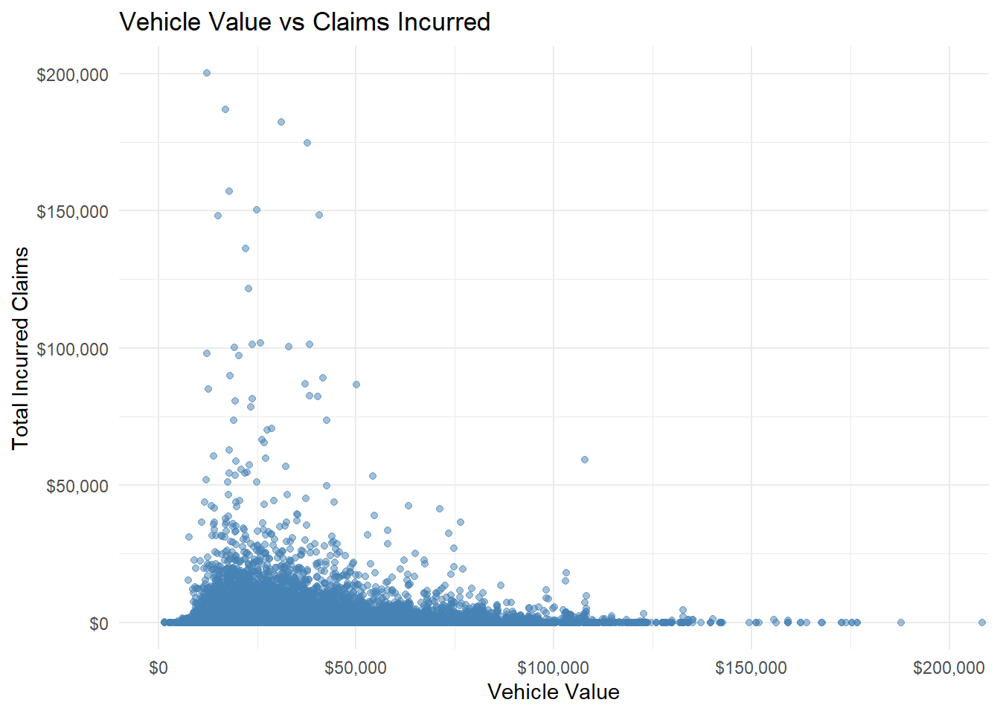
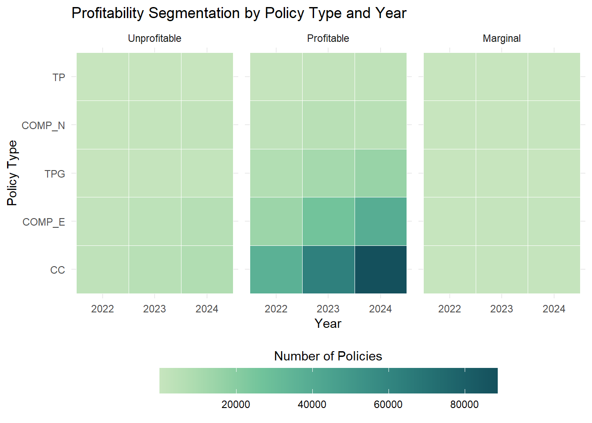
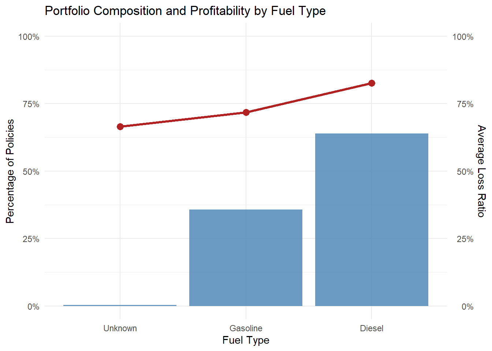
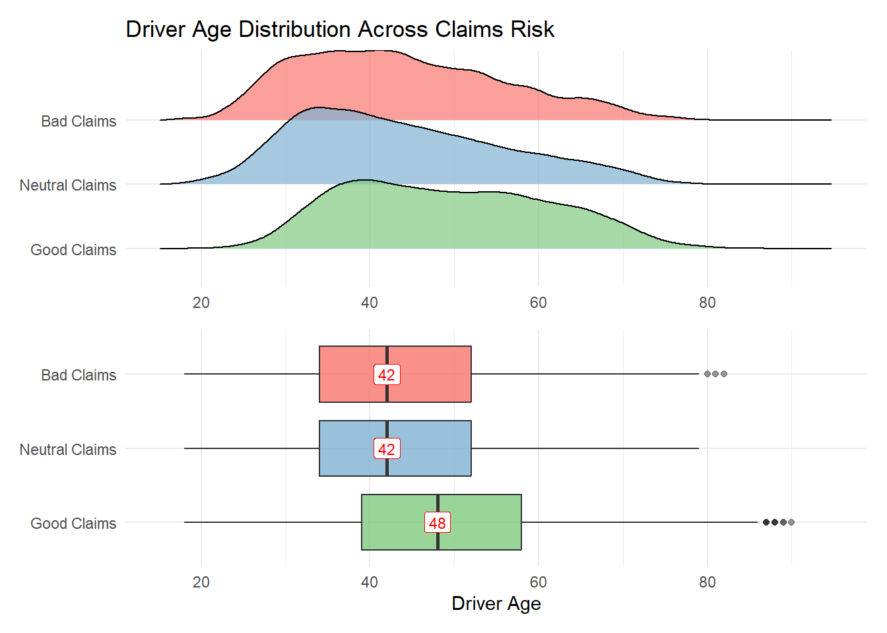

Code
pacman::p_load(
tidyverse, ggrepel, ggthemes, ggridges, ggdist, colorspace, patchwork, scales
)CHUA Wee Tian
May 24, 2026
May 24, 2026
Insurers often carry underperforming portfolios where the root causes of poor profitability and high volatility are unknown. Leveraging visual analytics can potentially help investigate trends in underlying loss drivers, while data enrichment using external data can help refine segmentation and underwriting strategy.
This report investigates profitability and volatility drivers in a motor insurance portfolio using advanced visual analytics methods in R. The analysis integrates univariate and bivariate visualisation approaches to uncover deeper insights into data distributions and identifying key factors influencing the profitability and volatility of the insurance portfolio.
The specific tasks of this study are:
We load the following R packages using the pacman::p_load() function:
A real world motor vehicle insurance portfolio data set from a Spanish insurance company specialised in non-life insurance will be used in this study. The data set and its cookbook are available for download at Mendeley Data. We will import this dataset as “insurance”.
We first take a look at the data and check if there are any duplicate entries or missing values.
Using the glimpse() function, we see that the dataset consists of 354,140 rows and 47 columns. It also shows the column names, column type, and the first few entries of each column.
Rows: 354,140
Columns: 47
$ insured_id <dbl> 1, 2, 2, 2, 3, 3, 3, 4, 4, 4, 5, 5, 5, 6, …
$ year <dbl> 2022, 2022, 2023, 2024, 2022, 2023, 2024, …
$ policy_type <chr> "COMP_E", "COMP_E", "COMP_E", "COMP_E", "C…
$ policy_status <chr> "C", "A", "A", "A", "A", "A", "A", "A", "A…
$ business_type <chr> "NB", "P", "P", "P", "NB", "P", "P", "NB",…
$ payment_frequency <chr> "A", "A", "A", "A", "S", "S", "S", "A", "A…
$ bonus_score <chr> "G", "G", "G", "G", "G", "G", "G", "G", "G…
$ driver_age <dbl> 48, 43, 44, 45, 45, 46, 47, 32, 33, 34, 39…
$ vehicle_age <dbl> 22, 24, 25, 26, 26, 27, 28, 12, 13, 14, 20…
$ age_driving_licence <dbl> 26, 19, 19, 18, 19, 19, 19, 19, 19, 19, 19…
$ fuel_type <chr> "G", "D", "D", "D", "D", "D", "D", "D", "D…
$ vehicle_value <dbl> 149511.44, 65065.12, 65065.12, 65065.12, 5…
$ seats <dbl> 4, 8, 8, 8, 7, 7, 7, 5, 5, 5, 5, 5, 5, 5, …
$ power_to_weight_ratio <dbl> 3.92, 10.15, 10.15, 10.15, 9.19, 9.19, 9.1…
$ vehicle_brand <chr> "PORSCHE", "MERCEDES", "MERCEDES", "MERCED…
$ municipality_type <chr> "I", "I", "I", "I", "I", "I", "I", "I", "I…
$ circulation_area <chr> "U", "U", "U", "U", "R", "R", "R", "R", "R…
$ total_premium <dbl> 279.5576, 546.6234, 548.7526, 584.6324, 68…
$ liability_premium <dbl> 30.60232, 114.33336, 110.66689, 122.09253,…
$ property_damage_premium <dbl> 121.9127, 303.1060, 304.9560, 305.2251, 35…
$ theft_premium <dbl> 112.361489, 80.784824, 83.521384, 107.8868…
$ fire_premium <dbl> 3.832441, 7.826861, 6.151465, 5.842892, 7.…
$ glass_premium <dbl> 8.305788, 30.091751, 32.861626, 31.101584,…
$ legal_protection_premium <dbl> 2.043622, 7.812747, 7.655637, 10.084173, 6…
$ occupants_premium <dbl> 0.4992053, 2.6679084, 2.9395659, 2.3992827…
$ total_claims <dbl> 0, 0, 1, 2, 0, 0, 0, 0, 0, 0, 0, 0, 0, 5, …
$ liability_claims <dbl> 0, 0, 1, 1, 0, 0, 0, 0, 0, 0, 0, 0, 0, 0, …
$ liability_property_claims <dbl> 0, 0, 1, 1, 0, 0, 0, 0, 0, 0, 0, 0, 0, 0, …
$ liability_injury_claims <dbl> 0, 0, 0, 0, 0, 0, 0, 0, 0, 0, 0, 0, 0, 0, …
$ property_claims <dbl> 0, 0, 0, 1, 0, 0, 0, 0, 0, 0, 0, 0, 0, 5, …
$ theft_claims <dbl> 0, 0, 0, 0, 0, 0, 0, 0, 0, 0, 0, 0, 0, 0, …
$ fire_claims <dbl> 0, 0, 0, 0, 0, 0, 0, 0, 0, 0, 0, 0, 0, 0, …
$ glass_claims <dbl> 0, 0, 0, 0, 0, 0, 0, 0, 0, 0, 0, 0, 0, 0, …
$ legal_protection_claims <dbl> 0, 0, 0, 0, 0, 0, 0, 0, 0, 0, 0, 0, 0, 0, …
$ occupants_claims <dbl> 0, 0, 0, 0, 0, 0, 0, 0, 0, 0, 0, 0, 0, 0, …
$ total_incurred <dbl> 0.000, 0.000, 233.013, 2586.361, 0.000, 0.…
$ liability_incurred <dbl> 0.000, 0.000, 233.013, 1035.000, 0.000, 0.…
$ liability_property_incurred <dbl> 0.000, 0.000, 233.013, 1035.000, 0.000, 0.…
$ liability_injury_incurred <dbl> 0.000, 0.000, 0.000, 0.000, 0.000, 0.000, …
$ property_incurred <dbl> 0.000, 0.000, 0.000, 1551.361, 0.000, 0.00…
$ theft_incurred <dbl> 0, 0, 0, 0, 0, 0, 0, 0, 0, 0, 0, 0, 0, 0, …
$ fire_incurred <dbl> 0, 0, 0, 0, 0, 0, 0, 0, 0, 0, 0, 0, 0, 0, …
$ glass_incurred <dbl> 0, 0, 0, 0, 0, 0, 0, 0, 0, 0, 0, 0, 0, 0, …
$ legal_protection_incurred <dbl> 0, 0, 0, 0, 0, 0, 0, 0, 0, 0, 0, 0, 0, 0, …
$ occupants_incurred <dbl> 0, 0, 0, 0, 0, 0, 0, 0, 0, 0, 0, 0, 0, 0, …
$ total_exposure <dbl> 0.09863014, 1.00000000, 1.00000000, 1.0000…
$ liability_exposure <dbl> 0.09863014, 1.00000000, 1.00000000, 1.0000…Using the duplicated function, we see that there are no duplicate entries in the data.
# A tibble: 0 × 47
# ℹ 47 variables: insured_id <dbl>, year <dbl>, policy_type <chr>,
# policy_status <chr>, business_type <chr>, payment_frequency <chr>,
# bonus_score <chr>, driver_age <dbl>, vehicle_age <dbl>,
# age_driving_licence <dbl>, fuel_type <chr>, vehicle_value <dbl>,
# seats <dbl>, power_to_weight_ratio <dbl>, vehicle_brand <chr>,
# municipality_type <chr>, circulation_area <chr>, total_premium <dbl>,
# liability_premium <dbl>, property_damage_premium <dbl>, …We run the below code to check for missing values.
# A tibble: 47 × 2
name value
<chr> <int>
1 fuel_type 1287
2 vehicle_value 513
3 vehicle_age 2
4 age_driving_licence 2
5 insured_id 0
6 year 0
7 policy_type 0
8 policy_status 0
9 business_type 0
10 payment_frequency 0
# ℹ 37 more rowsThe number of missing value is relatively low, so imputation is appropriate.
insurance <- insurance |>
mutate(
fuel_type = replace_na(fuel_type, "Unknown"),
vehicle_value = replace_na(
vehicle_value,
median(vehicle_value, na.rm = TRUE)
),
vehicle_age = replace_na(
vehicle_age,
median(vehicle_age, na.rm = TRUE)
),
age_driving_licence = replace_na(
age_driving_licence,
median(age_driving_licence, na.rm = TRUE)
),
fire_incurred = replace_na(fire_incurred, 0),
occupants_incurred = replace_na(
occupants_incurred,
0
)
)
insurance |>
summarise(across(everything(),
~sum(is.na(.)))) |>
pivot_longer(everything()) |>
arrange(desc(value))# A tibble: 47 × 2
name value
<chr> <int>
1 insured_id 0
2 year 0
3 policy_type 0
4 policy_status 0
5 business_type 0
6 payment_frequency 0
7 bonus_score 0
8 driver_age 0
9 vehicle_age 0
10 age_driving_licence 0
# ℹ 37 more rowsSeveral derived variables were created to improve analytical depth and facilitate bivariate and multivariate visual analytics.
The following variables were first converted into numeric format to ensure that mathematical calculations can be performed correctly: total_claims, total_exposure, total_incurred and total_premium
Loss Ratio - measures the relationship between claims incurred and premium earned. Lower loss ratio indicates stronger profitability and value greater than 1 imply claims incurred exceed premium income.
Profitability Band - categorise policies into interpretable underwriting performance group.
(< 0.6 Profitable), (0.6 – 1.0 Marginal), (> 1.0 Unprofitable)
Age Group - simplify demographic analysis by grouping drivers into meaningful underwriting categories.
(< 30 Young), (30 – 60 Middle), (> 60 Senior)
insurance <- insurance |>
mutate(
total_claims = as.numeric(total_claims),
total_exposure = as.numeric(total_exposure),
total_incurred = as.numeric(total_incurred),
total_premium = as.numeric(total_premium),
loss_ratio = if_else(
total_premium > 0,
total_incurred / total_premium,
0
),
profitability_band = case_when(
loss_ratio < 0.6 ~ "Profitable",
loss_ratio < 1 ~ "Marginal",
TRUE ~ "Unprofitable"
),
age_band = case_when(
driver_age < 30 ~ "Young",
driver_age < 60 ~ "Middle",
TRUE ~ "Senior"
)
)Examines the distribution of total premium values within the motor insurance portfolio. The objective is to understand: premium concentration patterns, pricing structure, variability of insurance premiums.
The analysis supports underwriting and pricing evaluation by identifying how premium values are distributed across policyholders and detecting whether the portfolio is concentrated within lower or higher premium ranges.
The histogram was selected because it effectively visualises distribution shape, highlights concentration and spread, reveals skewness, identifies potential outliers, supports exploratory portfolio analysis.
ggplot(
insurance,
aes(total_premium)
) +
geom_histogram(
bins = 50,
fill = "steelblue",
color = "white"
) +
scale_y_continuous(
labels = scales::comma
) +
scale_x_continuous(
labels = scales::dollar,
breaks = seq(
0,
2000,
by = 500
)
) +
coord_cartesian(
xlim = c(0, 2000)
) +
labs(
title = "Distribution of Total Premium",
x = "Total Premium",
y = "Policy Count"
) +
theme_minimal()
Key Insights
Examines the distribution of total incurred claims within the motor insurance portfolio. The objective is to understand: concentration of claim amounts, variability of losses, presence of extreme claim events.
The analysis supports underwriting and claims management by identifying how incurred claims are distributed across the portfolio and assessing the overall volatility of insurance losses.
The density plot was selected because it reveals distribution shape clearly, highlights skewness and concentration, reduces visual fragmentation compared to histograms, improves interpretation of continuous claims data.
ggplot(
insurance,
aes(x = total_incurred)
) +
geom_density(
fill = "firebrick",
alpha = 0.6
) +
scale_x_continuous(
labels = scales::dollar,
breaks = seq(
0,
5000,
by = 500
)
) +
coord_cartesian(
xlim = c(0, 5000)
) +
labs(
title = "Claims Incurred Distribution",
x = "Claims Incurred",
y = "Density"
) +
theme_minimal()
Key Insights
Examines the distribution of insurance policies across different profitability segments within the motor insurance portfolio. The objective is to evaluate the overall underwriting performance of the insurer by identifying the proportion of: profitable policies, marginally profitable policies, unprofitable policies.
The analysis supports portfolio assessment by revealing the balance between profitable and loss making insurance business segments.
The bar chart was selected because it enables clear comparison between profitability segments, simplifies interpretation of portfolio composition, highlights concentration differences effectively, supports intuitive business storytelling.
insurance |>
mutate(
profitability_band = factor(
profitability_band,
levels = c(
"Unprofitable",
"Profitable",
"Marginal"
)
)
) |>
ggplot(
aes(
x = profitability_band
)
) +
geom_bar(
aes(
y = after_stat(
count / sum(count)
)
),
fill = "steelblue"
) +
scale_y_continuous(
labels = scales::percent,
limits = c(0, 1)
) +
labs(
title = "Profitability Segmentation",
x = "Profitability Band",
y = "Percentage of Policies"
) +
theme_minimal()
Key Insights
Examines the distribution of policyholders across different driver age groups within the motor insurance portfolio. The objective is to understand the demographic composition of insured drivers and identify which age segments dominate the portfolio.
The analysis supports underwriting and risk segmentation by providing insight into the insurer’s exposure across different driver age categories.
The bar chart was selected because it clearly communicates category magnitude differences, enables rapid comparison between age groups, simplifies demographic interpretation, supports intuitive business storytelling.
insurance |>
mutate(
age_band = factor(
age_band,
levels = c(
"Young",
"Middle",
"Senior"
)
)
) |>
ggplot(
aes(age_band)
) +
geom_bar(
aes(
y = after_stat(
count / sum(count)
)
),
fill = "steelblue"
) +
scale_y_continuous(
labels = scales::percent,
limits = c(0, 1)
) +
labs(
title = "Distribution of Driver Age Group",
x = "Age Group",
y = "Percentage of Policies"
) +
theme_minimal()
Key Insights
Examines the distribution of policies across different policy types within the motor insurance portfolio. The objective is to understand the composition of insurance products offered and identify which coverage categories dominate the portfolio.
The analysis supports underwriting and portfolio management by revealing the concentration of policies within different insurance coverage structures.
The bar chart was selected because it clearly communicates differences in product concentration, enables rapid comparison between policy types, simplifies interpretation of portfolio composition, supports intuitive business storytelling.
insurance |>
mutate(
policy_type = factor(
policy_type,
levels = c(
"CC",
"COMP_E",
"TPG",
"COMP_N",
"TP"
)
)
) |>
ggplot(
aes(
x = policy_type,
fill = policy_type
)
) +
geom_bar() +
scale_fill_manual(
values = c(
"CC" = "#7FC97F",
"COMP_E" = "#80B1D3",
"TPG" = "#F8766D",
"COMP_N" = "#B3DE69",
"TP" = "#FDB462"
),
breaks = c(
"CC",
"COMP_E",
"TPG",
"COMP_N",
"TP"
),
labels = c(
"CC" = "CC: Third-party liability combined",
"COMP_E" = "COMP_E: Comprehensive with excess",
"TPG" = "TPG: Third-party liability with glass coverage",
"COMP_N" = "COMP_N: Comprehensive without excess",
"TP" = "TP: Basic third-party liability coverage only"
)
) +
scale_y_continuous(
labels = scales::comma
) +
labs(
title = "Distribution of Policy Type",
x = "Policy Type",
y = "Policy Count",
fill = "Policy Description"
) +
theme_minimal()
Key Insights
Examines the relationship between vehicle value and total incurred claims within the motor insurance portfolio. The objective is to determine whether higher value vehicles are associated with larger insurance claims and to identify patterns, variability, and potential outliers within the portfolio.
The analysis supports underwriting and pricing evaluation by exploring how the value of insured vehicles influences financial claim exposure.
The scatter plot was selected because it reveals correlation patterns, identifies clustering behaviour, highlights outliers, supports trend analysis, enables detection of claims volatility.
ggplot(
insurance,
aes(
x = vehicle_value,
y = total_incurred
)
) +
geom_point(
alpha = 0.5,
color = "steelblue"
) +
scale_y_continuous(
labels = scales::dollar,
breaks = seq(
0,
200000,
by = 50000
)
) +
scale_x_continuous(
labels = scales::dollar,
breaks = seq(
0,
200000,
by = 50000
)
) +
coord_cartesian(
xlim = c(0, 200000),
ylim = c(0, 200000)
) +
labs(
title = "Vehicle Value vs Claims Incurred",
x = "Vehicle Value",
y = "Total Incurred Claims"
) +
theme_minimal()
Key Insights
Examines the relationship between policy type, profitability segment, underwriting activity across years within the motor insurance portfolio. The objective is to identify how different insurance products perform across profitability categories over time and to detect concentration patterns within underwriting performance.
The analysis supports portfolio monitoring, underwriting evaluation, profitability assessment, product level performance analysis.
The heatmap was selected because it reveals concentration patterns clearly, supports comparison across multiple dimensions, highlights temporal changes, enables rapid identification of high density portfolio segments. Compared to tables or grouped bar charts, the heatmap provides a more compact and interpretable representation of multidimensional insurance data.
insurance |>
mutate(
policy_type = factor(
policy_type,
levels = c(
"CC",
"COMP_E",
"TPG",
"COMP_N",
"TP"
)
),
profitability_band = factor(
profitability_band,
levels = c(
"Unprofitable",
"Profitable",
"Marginal"
)
)
) |>
count(
year,
policy_type,
profitability_band
) |>
ggplot(
aes(
x = factor(year),
y = policy_type,
fill = n
)
) +
geom_tile(
color = "white"
) +
facet_wrap(
~ profitability_band
) +
scale_fill_continuous_sequential(
palette = "BluGrn",
guide = guide_colorbar(
barwidth = 20,
barheight = 1.5,
title.position = "top",
title.hjust = 0.5
)
) +
labs(
title = "Profitability Segmentation by Policy Type and Year",
x = "Year",
y = "Policy Type",
fill = "Number of Policies"
) +
theme_minimal() +
theme(
legend.position = "bottom"
)
Key Insights
Examines the relationship between fuel type distribution, portfolio composition, underwriting profitability within the motor insurance portfolio. The objective is to compare the proportion of diesel and gasoline vehicles within the portfolio, their corresponding average loss ratio performance.
The analysis supports underwriting and risk assessment by identifying whether certain fuel types contribute disproportionately to portfolio exposure or profitability risk.
The chart combines bar chart to represent policy distribution percentages and line chart to represent average loss ratio. A combination chart was selected because it effectively integrates portfolio composition analysis, profitability performance analysis within a single visualisation.
This technique was selected because it supports comparison between volume and profitability, enables multidimensional analysis,improves analytical efficiency, enhances business storytelling. Compared to separate charts, the combined visualisation allows users to evaluate whether the most common fuel types are also associated with stronger or weaker underwriting performance.
fuel_summary <- insurance |>
group_by(fuel_type) |>
summarise(
policy_count = n(),
policy_percentage = n() / nrow(insurance),
avg_loss_ratio = mean(
loss_ratio,
na.rm = TRUE
)
)
ggplot(
fuel_summary,
aes(
x = reorder(
fuel_type,
policy_percentage
)
)
) +
geom_col(
aes(
y = policy_percentage
),
fill = "steelblue",
alpha = 0.8
) +
scale_x_discrete(
labels = c(
D = "Diesel",
G = "Gasoline"
)
) +
geom_line(
aes(
y = avg_loss_ratio,
group = 1
),
color = "firebrick",
linewidth = 1.2
) +
geom_point(
aes(
y = avg_loss_ratio
),
color = "firebrick",
size = 3
) +
scale_y_continuous(
name = "Percentage of Policies",
labels = scales::percent,
limits = c(0, 1),
sec.axis = sec_axis(
~ .,
labels = scales::percent,
name = "Average Loss Ratio"
)
) +
labs(
title = "Portfolio Composition and Profitability by Fuel Type",
x = "Fuel Type"
) +
theme_minimal()
Key Insights
Examines the relationship between driver age, historical claims behaviour, insurance risk categories within the motor insurance portfolio. The objective is to determine whether differences in driver age distribution exist across good, neutral, bad claims history segments.
The analysis supports underwriting and risk profiling by identifying how age characteristics vary across claims performance groups.
The ridge plot was selected because it visualises the overall distribution shape, highlights concentration patterns, enables comparison across groups, reveals skewness and spread differences.The box plot was selected because it displays medians, shows interquartile ranges, identifies variability, highlights potential outliers. While the ridge plot emphasises distribution shape, the box plot provides a more structured statistical comparison between risk categories. The combination of both techniques strengthens analytical depth and improves interpretability.
insurance <- insurance |>
mutate(
bonus_score = factor(
bonus_score,
levels = c("G", "N", "B"),
labels = c(
G = "Good Claims",
N = "Neutral Claims",
B = "Bad Claims"
)
)
)
ridge_plot <- insurance |>
ggplot(
aes(
x = driver_age,
y = bonus_score,
fill = bonus_score
)
) +
geom_density_ridges(
alpha = 0.7,
color = "black",
scale = 1.2
) +
scale_fill_manual(
values = c(
"#7FC97F",
"#80B1D3",
"#F8766D"
)
) +
scale_x_continuous(
breaks = c(
20,
40,
60,
80
),
limits = c(
15,
95
)
) +
labs(
title = "Driver Age Distribution Across Claims Risk",
x = NULL,
y = NULL,
fill = "Bonus Score"
) +
theme_minimal() +
theme(
legend.position = "none"
)
box_plot <- insurance |>
ggplot(
aes(
x = driver_age,
y = bonus_score,
fill = bonus_score
)
) +
geom_boxplot(
alpha = 0.8,
outlier.alpha = 0.5
) +
stat_summary(
fun = median,
geom = "label",
aes(label = round(after_stat(x), 1)),
fill = "white",
color = "red",
size = 3
) +
scale_fill_manual(
values = c(
"#7FC97F",
"#80B1D3",
"#F8766D"
)
) +
scale_x_continuous(
breaks = c(
20,
40,
60,
80
),
limits = c(
15,
95
)
) +
labs(
x = "Driver Age",
y = NULL,
fill = "Bonus Score"
) +
theme_minimal() +
theme(
legend.position = "none",
)
ridge_plot / box_plot
Key Insights
This study successfully applied visual analytics techniques to investigate profitability and volatility drivers within a motor insurance portfolio. Through the integration of univariate and bivariate visualisation methods, the analysis uncovered meaningful relationships between underwriting variables, demographic characteristics, portfolio composition, and insurance profitability outcomes.
The findings demonstrated that underwriting performance is influenced by multiple interconnected factors including vehicle value, driver age, fuel type, claims history and policy type. Higher value vehicles were generally associated with larger incurred claims, while certain policy types exhibit stronger concentration within profitable segments, suggesting more effective underwriting and pricing performance.These findings suggest that portfolio risk is not evenly distributed and that selected underwriting segments contribute disproportionately to claims volatility and profitability pressure.
The study also revealed that demographic characteristics influence claims behaviour and underwriting outcomes. Drivers with better claims histories appeared more concentrated within middle age groups, while higher risk claims behaviour displayed broader variability across demographic categories. This supports the importance of demographic segmentation within pricing and underwriting models.
The application of advanced visual analytics techniques such as heatmaps, scatter plots, ridge plots, box plots, density plots and combination charts significantly improved analytical interpretability and business storytelling. These techniques enabled multidimensional relationships and hidden portfolio structures to be identified more effectively than traditional tabular analysis alone.
From a business perspective, the analysis provides insurers with valuable insights for pricing optimisation, underwriting refinement, profitability management, portfolio monitoring, claims risk assessment. The results suggest that insurers should continue strengthening risk based pricing approaches and focus underwriting attention on segments displaying elevated loss ratios and higher claims variability.
Finally, visual analytics serves as a powerful decision support tool for insurance portfolio management. By combining data transformation, statistical reasoning and effective visual communication, insurers can better understand portfolio behaviour, identify emerging underwriting risks and make more informed strategic decisions to improve long term profitability and portfolio stability.
Thank you.